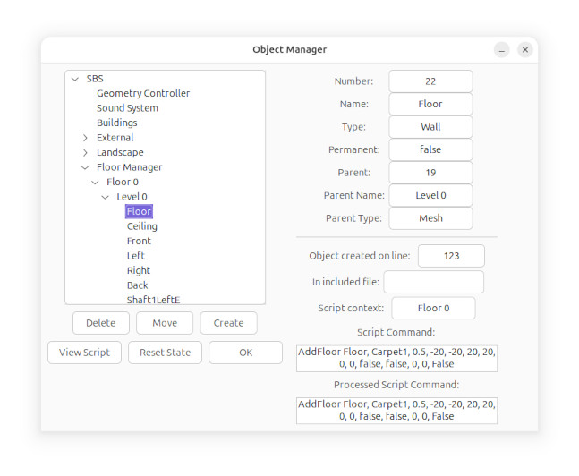

The
Move button opens the
Move Object window.
The
Delete button deletes an object from the
simulator. Keep an eye on the console when deleting an
object,
because in certain situations the simulator will refuse to delete
an object with dependencies.
The
Create button allows you to create objects in the
simulator using a helper interface, that generates script
commands.
View Script shows the entire in-memory building script for
this simulator instance.
The
Reset State button, resets the state of an object to
the default, if supported by the object.